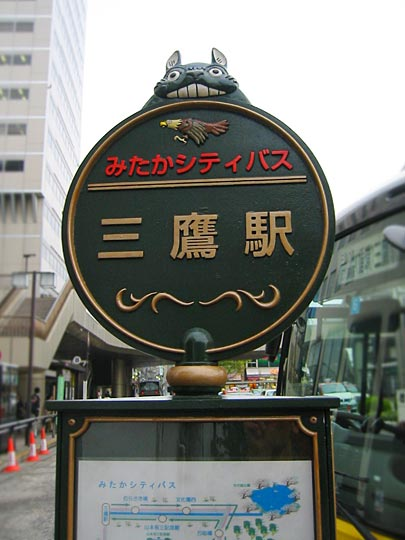
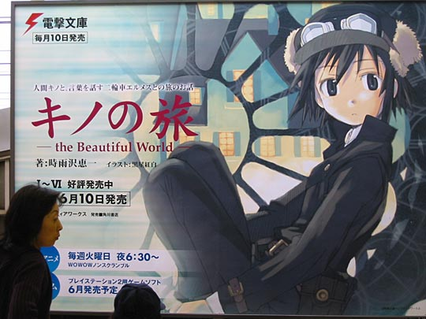
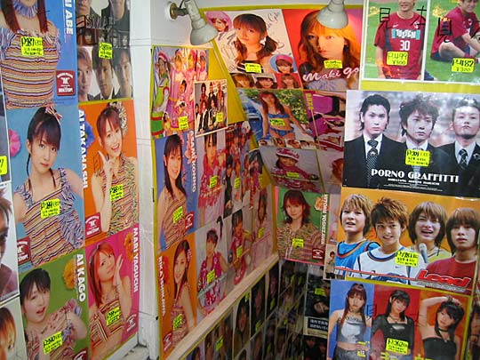
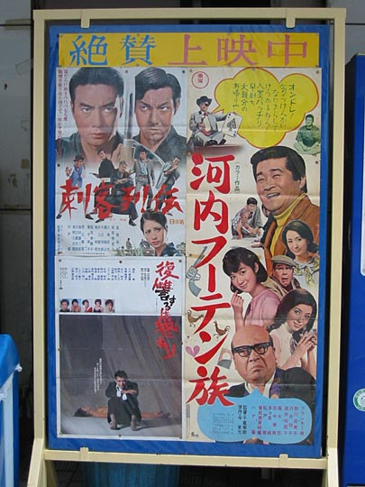
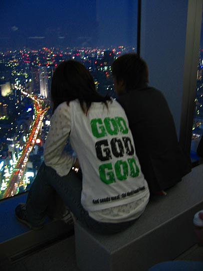

Photos from our second trip to Japan, 18 March–2 April 2005 are on Flickr
Japan, 18-28 April 2003
- Index and travelogue
- Imagery: Japanese posters, images, TV, and other designs [2.4Mb]
- Design that's different or clever [0.8Mb]
- Food [2.36Mb]
- Loot [2.45Mb]
Imagery — Japanese posters, images, TV, and other designs
OK, there's a lot of overlap in my categorisation, but in an attempt to create some order:
Products
Pocari Sweat. Best-tasting drink in Japan. Wish they'd export it to the UK.
Vending machines that you see on every block. Love that logo.
Coffee and milk tea, in a can
Everybody walks around with the fold-open i-mode picture phones. This is a poster for a slightly more advanced model (being compared with a drinking straw). Looks great.
Public information signage
When you drop something on the subway tracks, get an attendant to retrieve it with looooong pincers. Everywhere.
Look both ways before crossing the tracks. Kamakura.

OK, this is not exactly a typical sign. Ghibli Museum bus stop in Mitaka, that shows the attention to detail of the whole project. (The design of the museum is greatly inspired by Europe, incidentally, including things like ironwork signs and streetlights and railings.)
Posters, merchandising
Local election season, I think. Also why we saw so many politicians canvassing in the streets. These posters also make an appearance in My Neighbours the Yamadas. The posters were everywhere; this photo is from Aoyama.
Baby Spice is Star Bitch, sorry, Beach
Takashi Murakami's gorgeous Roppongi Hills poster
Good, simple poster design. Nice retro illustration. Funky typography too. (A coloured circle is the symbol for subway on Tokyo's public transport.)
Cool backlit poster featuring Tokyo's crows. Wish I knew what it was for.

Posters on the subway
 Outside Tower Records. Dig the hair.
Outside Tower Records. Dig the hair.

Teen idols, Harajuku
Shop sign, Harajuku
Shop sign, Harajuku

A dated-looking movie poster (or perhaps it's typical for domestic B-movies), in Asakusa
Calligraphic signs:
Restaurant, Shibuya. Like the logo, too.
Beautiful hand-painted sign (gloss paint on metal) near Hakone. I think it might be advertising the Gyoza Centre restaurant between Hakone and Gora.
Restaurant, Shibuya.
Outside a teahouse, Kamakura
Didn't see that much graffitti, but this is the only example I considered good enough to photograph.
Here's one thing I found intriguing about Japanese signage: While the writing system is much closer to its pictorial origins than the Roman alphabet, pictorial typography (where letters are made to look like pictures) is far less prevalent in Japan than in the West. The above (charming logo for an unagi restaurant) is literally the only example I saw in Japan, and I was looking.
Toys, merchandise and illustration
Astro Boy and TV set showing the old black-and-white programmes outside a shop in Takeshita-dori
 Snoopy Town, Harajuku
Snoopy Town, Harajuku
Not sure if these are actually Japanese, but cute anyway
Beautiful set of stamps. Illustrated by Dick Bruna (creator of Miffy), so not strictly Japanese either. (I'm often amazed to what a degree Dick Bruna, a Dutch artist with a grounding in De Stijl, influenced and still influences Japanese illustration, and I'm not just referring to Hello Kitty. Although to be honest, I'm not sure to what a degree Hello Kitty was influenced by Miffy, whether the resemblances are coincidental, or whether Bruna himself was influenced by Japanese graphics to any degree.)
Commercial signage and logos

Fugu restaurants seemed to put special effort into their displays, from aquaria to 3-D signs like this. Shibuya.

I particularly liked the designs on the awning of this one. Also some of the more unusual calligraphy I'd seen. Asakusa.
Ducky Duck. Shibuya.
Building exterior, Shibuya. Chihuahuas are big in Japan.
Probably one of the most ubiquitous logos in Japan (and it's outside the Mitsukoshi centre at Piccadilly too), and I still don't know what company it's for. One of my favourite logos in the world. Kamakura.
Update: It's the Yamato Transport Company. I found this information accidentally via Helen McCarthy's excellent book about Hayao Miyazaki, where she points out the Japanese title of Kiki's Delivery Service — Majo no takkyubin — borrows the name of the company's door-to-door delivery service.
TV
Frenetic early-morning sing-a-long children's programme with outlandish costumes and sets
Can you speak English?
This programme, on quite late in the evening, was both hysterical and humbling, but greatly cheering after our own struggles to speak Japanese. The Japanese take learning English as quite a responsibility, and the way the programme also spells out the "cultural ambassador" principle (you're a good citizen if you can communicate with foreigners in their own language) is sobering. You don't think like that if your mother tongue is English.
While much of the programme takes place in a set where the English guy is played by a badly animated virtual person on a TV screen (which helps not to make the guests look bad), the on-location bits are presented by a slick, brutally smug American businessman-type.
They'd focus on the difficulties of someone like this engineer in a Western firm based in Japan, in communicating with colleagues and superiors. (The problem seems as much etiquette-related as language.) One of the tips the programme bestows is the magic word "Exactly!", used when someone politely completes your sentence for you.
Pity I didn't get this guy in focus, but he's right out of the Neil Labute film, In the Company of MenTheir special guest tonight is the stylish lady on the right who impresses the audience with her excellent (though to our ears, still very strained) English. Here she offers advice with the difficulty of knowing when to use L or R. ("In the middle of Los Angeles" is apparently a particularly tricky sentence.)
The ubiquitous beribboned and bejerseyed long-haired dachshund
Clothes
See also our last day in Harajuku photos.

Street fashion, Harajuku
Harajuku

T-shirt, in Tokyo City View, Roppongi Hills. The small text reads, "God sends meat: the devil sends cooks"
Japlish
Window display, Harajuku. The slogan is like something out of George Orwell
Whoever buys this shirt better not wear it to an English-speaking country
Knock-offs
If I'd known I'd see so many different Starbucks knock-offs, I'd have started photographing them sooner.
Another M&S, sorry, M&E. Near Shinjuku-gyoen.